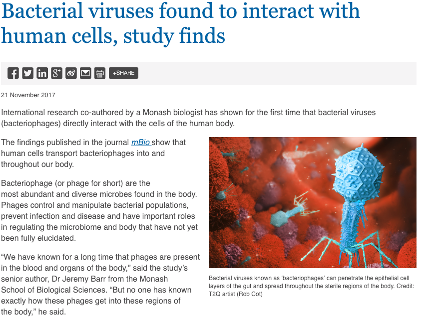

Anwendungsbeispiele von Phagen:
-
bestimmung von Bakterien
-
Genveränderungen bei Bakterien
-
In der Zukunft evtl. gegen Krebs
-
Antibioteka Ersatz
Waffe gegen Bakterielle Infektionen
Aber werden Bakterien dann nicht auch Resistent gegen Phagen?
Menschliche Symbiose mit Phagen?
